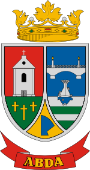
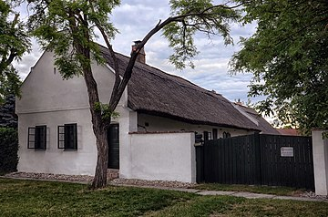
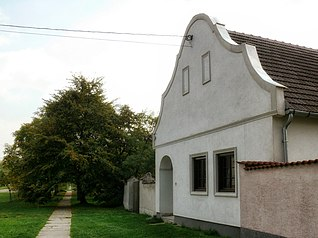
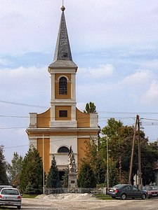
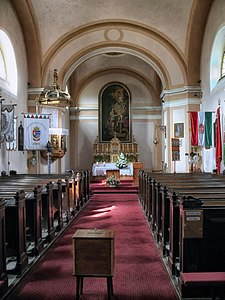

Látnivalók
Népi építészet➥

Szent István utca 24.

A falu 1830 utáni Pityer-dombi újratelepülésének első negyedszázadában, ahogy azt a második katonai felmérés 1856-os abdai térképszelvénye tanúsítja, tipikus síkvidéki sorfaluként a mindkét oldalán 900 méteres hosszúságban beépült Fő utcából (ma Szent István utca) állt.
Ennek felvégi részén, a templomnál két kisebb keresztutca kezdett kialakulni, a mai Dózsa és Honvéd utcák elődei, de az utcácskák házai ekkor még nem értek el a bécsi országútig. A kiparcellázott téglatelkekre soros elrendezésű udvarok települtek, a laza házsorok utcavonalas beépítésűek voltak (és azok ma is) a helyenként 35-40 méter széles főutca két oldalán.
A 19. század végéig hagyományosan sárral-agyaggal tapasztott sövényből épült az abdai házak fala (paticsfal). A jellemzően soros elrendezésű háromosztatú (szoba–konyha–szoba) házba a bejárat az oldaltornácról (más néven gádorról) nyílt, a lakóhelyiségek meghosszabbításaként épült fel az istálló és a kocsiszín. A főutcában néhány lakóház megőrződött közel eredeti formájában. A Szent István utca 27. szám alatti, helyileg védett lakóépület egyik mestergerendája még 1830-ban, a másik 1908-ban készült, szabadkéményes konyhájában pedig hasábkemence áll. A szomszédos, műemléki védelmet élvező 29. szám és az utca másik oldalán álló, 24. szám alatti lakóházak szintén megőrizték félköríves záródású parasztbarokk falazott oromzatukat, kis ablakszemes homlokzatukat, amelyek ajtaja az oldaltornácra szolgál. A 24. számú ház oromzatának szegélye a másik kettőtől eltérően ívelt, valamint ezen még a kis oromfalfülkék nyoma is látható.
A főutca keleti végén álló Alvégi kereszt a falu egyik legrégebbi emléke. Eredetileg 1741-ben készült, és vélhetően a régi faluban állt, majd 1843-ban került mai helyére, tíz évvel később, 1853. szeptember 12-én, Mária-napon pedig fel is szentelték. A keresztet 2007-ben felújították, környezete megszépült. Az Alvégi kereszt felszentelésével egy időben, 1852-ben állították fel a falu felvégi részén – a mai Dózsa utca és Bécsi út kereszteződésében – a Felvégi keresztet, donátora Somogyi István volt.
Alvégi kereszt- Felvégi kereszt
Szent József-templom➥
A templom és belső tere 2007-ben A műemlék jellegű, klasszicista stílusú római katolikus Szent József-templom a falu központjában áll, az 1830-ban új helyen újraalapított faluban 1843 és 1845 között épült fel. A 31 méteres hossztengelyű, 11 méter széles templom belső tere a hosszanti főhajóra, a boltívekkel elhatárolt kereszthajókra és a szentélyre tagolódik. A karzatot a bejárat felőli oldalon alakították ki. A 31 méter magas, kecses toronyban három harang kapott helyet, az 1920-as évekbeli Szent József- és Szent István-bronzharangok mellé 1990-ben került egy alumíniumharang.
Az eredeti falfestés az idők során elenyészett, ma látható legrégebbi freskóit az 1930-as években Borsa Antal készítette (az ő alkotása a falu határában álló Rákóczi-emlékmű is). Ezek a szentélyben és a hajó hátsó részében ma is látható ornamentális díszek, ezek mellett az ő alkotása volt a főhajó mennyezetének korábbi festménye az emmauszi vacsora jelenetével.
Újabb falfestmények – ezúttal már szekkók – kerültek a templomba az 1983–1985-ös felújítás során, Samodai József keze munkáját dicséri a szentélymennyezet Szentháromság-ábrázolása, a főhajóban a tizenkét éves Jézus jelenete, a hajó hátsó részében pedig a magyar szentek seregszemléje. Ez utóbbit Samodai 1984-ben bekövetkezett halála után Hertay Mária fejezte be.
Az eredeti főoltárt és oltárképét 1900-ban cserélték le díszes faragású faoltárra, a Szent Józsefet és a kisded Jézust ábrázoló festményre.
A további berendezés az 1840 körüli mellékoltárokból, szószékből, egy rézfedelű vörösmárvány keresztelőkútból és padokból áll. A szószék fedelén a Szentlélek szimbóluma, a galamb, az oszlopokkal négy mezőre osztott szószékpaláston pedig az evangélisták ábrázolása látható.
A klenódiumok sorában figyelemre méltó a tabernákulum ajtajának pelikánábrázolása, valamint a kínai aranyból készült örökmécs. A templom az 1930-as évek közepén, majd 1983 és 1985 között teljes felújításon esett át.
Forrás Wikipédia